How to analyze and visualize data#
Grist offers several powerful ways to analyze and visualize data. In this tutorial, you’ll learn how to:
- Create summary tables
- Create and configure charts
- Link charts dynamically
To explain these features, we’ll use the sample document “Investment Research”1. The dataset comes from Kaggle, and includes companies and investments in them up to 2013. Let’s take a look at the sample document and then we’ll talk about how to build it so that you can apply these tools to your own data.
Exploring the example#
Open the document “Investment Research”, found in Examples & Templates in your Grist home page. The first thing you’ll see is “Overview”. This page contains two charts next to two tables.
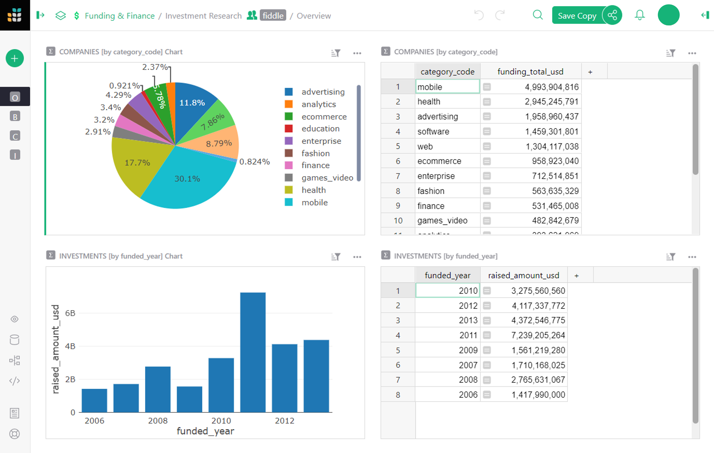
- The top left has a pie chart showing the distribution of investments by category. The table next to it has the same data in tabular form.
- Below the pie chart is a bar graph showing the total investments raised by year. It is also accompanied by the same data in the table next to it in tabular form.
All these charts and tables are examples of “summary tables”, which we’ll describe below.
The next page, “Breakdowns”, also contains two tables and two charts, but these are linked dynamically and offer much more detailed insight into the data.
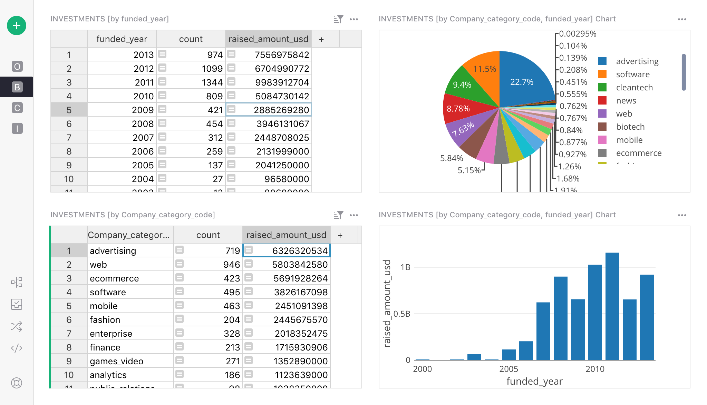
-
On the top left is a table showing the total funding by year (the same table as we saw on the previous page). This table serves as a driver for the chart next to it. When you click on a year in the table, the pie chart updates to show the distribution of investments in that year.
-
Similarly, the bottom table shows investments by category. When you click on any category, the line chart next to it updates to show the history of funding in that category over the years.
Note how powerful this is, and how much insight you can gain from it. For instance, you can see that the Software category had a major dip in investments around the recession of 2008, and that Biotech has consistently beaten it since then.
On the next page, “Company Details”, we get to see the granular data of this dataset.
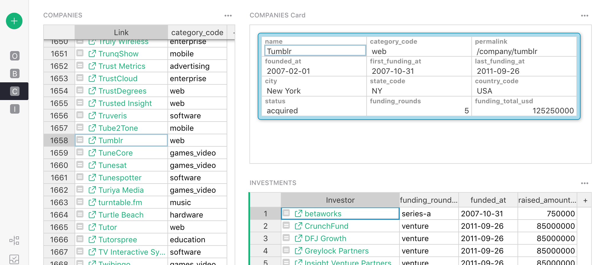
Here, we see a list of companies and the categories they fall into. Each company shown has a link pointing to its listing on the Crunchbase website. Selecting a company shows a card with its details, as well as a list of all the investments it has received.
This is where we begin to see the power of Grist. The original dataset is a flat spreadsheet of companies, and an even bigger spreadsheet of investments. By displaying the data graphically, the data comes alive, making it powerful and useful.
How can I make this?#
With Grist, presenting your own data in graphic form is a few easy steps away. Let’s begin with the first step.
Get the data#
Let’s import the raw data. We’ll import two CSV files, where each will become its own table. To follow along, save the files from crunchbase_companies_ny.csv and crunchbase_investments_ny.csv to your computer first. Then, create a Grist document by importing the first file from the home page.
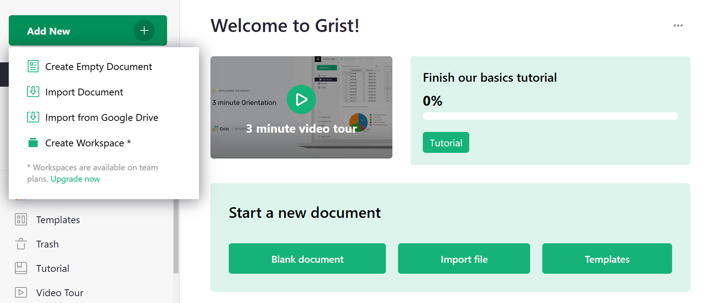
Next, import the second table using the “Add New” button and the “Import from file” option.
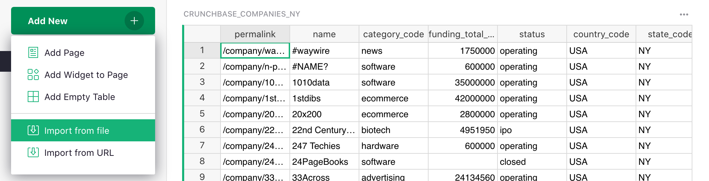
In the import dialog box, finish by clicking “Import” on the bottom left.
The tables you’ve imported will be named “crunchbase_companies_ny” and “crunchbase_investments_ny”. Use the page menu (click on the three dots beside the file name) to rename them “Companies” and “Investments”.

Make it relational#
The power of Grist comes from giving structure to the data.
Take a look at the “Investments” table. Sort by the first column and you’ll notice how much repetition there is: each row contains the complete company info, which both duplicates the data in the “Companies” table, and is repeated multiple times when multiple investments apply to the same company.2
The reality is that each investment applies to a single company. Each investment row only needs to contain a reference to a company, and the data specific to that investment.
To make it so, find a column that identifies a company uniquely. In this dataset, the first column, “company_permalink”, does it best3. Click on the arrow in the column header and click “Column Options”. Click on the arrow beside “Text” under the “Column Type” in the dialogue box at the right of the screen and select “Reference” from the list.
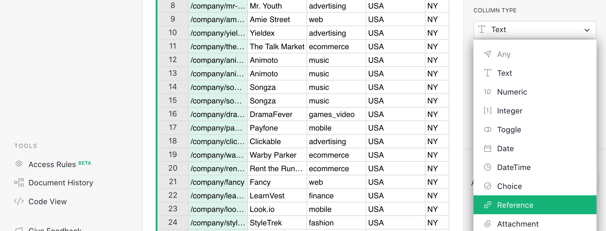
Grist will automatically suggest to make it a “Reference” to the “Companies” table, and to show the referenced company’s “permalink”. Click “Apply” to save this conversion.
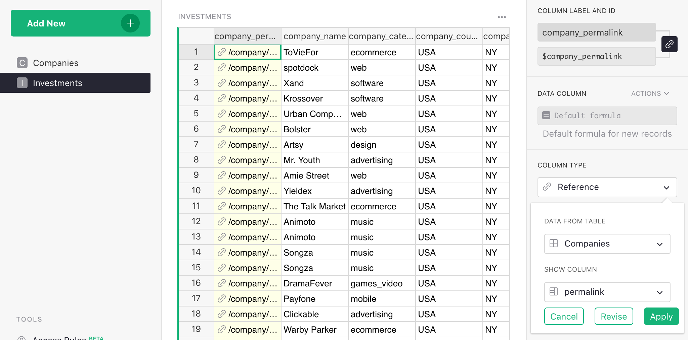
Let’s also rename this column to “Company”.
In Grist, duplicated data is not needed and we recommend removing it. Using the Option-Minus (Mac)
or Alt-Minus (Windows) shortcut is a quick way to remove columns. After removing the columns from
“company_name” to “company_city”, here’s what’s left:
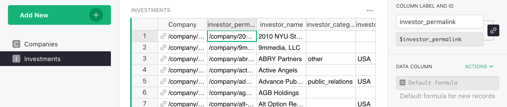
The data you’ve deleted isn’t lost since it was duplicated – it’s still available in the
“Companies” table and can be used in an Investment record’s formula as, e.g.
$Company.company_xxx.
In fact, there’s a handy way to create this kind of formula. Let’s create one that we’ll need later. Click the header of the “Company” column. In the right panel’s Column tab, you’ll see a section ‘Add Referenced Columns’. Click ‘Add Column’ to add the “category_code” column.
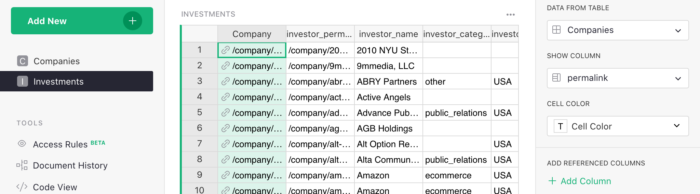
A new column will be added to the table with the formula $Company.category_code. For each
investment, it shows the “category_code” of the company linked to its investment record.
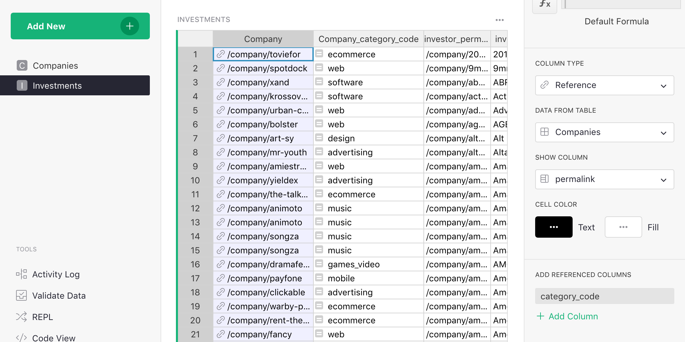
Summarize#
The powerful feature you’ve been waiting for is the one that summarizes the data. To utilize this, let’s add a table showing companies grouped by “category_code”.
In the “Add New” menu, select “Add Page”. In the dialog box, select “Table” and “Companies”, and then use the summation symbol (∑) to select the “Group By” columns -- i.e. the columns by which to summarize.
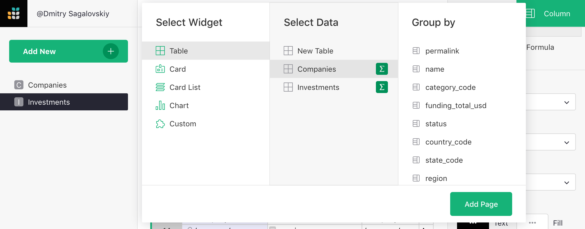
If you don’t select any columns, you’ll just get a single row of totals. If you summarize by “category_code”, you’ll get a row for each distinct value of “category_code”. Let’s do that and then click “Add to page”.

This is similar to Excel’s pivot tables. Each row represents the group of records from the source table (“Companies”) that have a particular value of “category_code”. There is a reminder of that in the table’s title (“COMPANIES [by category_code]”).
Such summary tables can (and should!) use formulas. The columns you choose when creating the table are the identifiers of the groups. All other columns are formula columns -- they are calculated. In formulas, the group of source records summarized by one row is available as the value “$group”.
For example, you’ll see a column created automatically called “count”. If you hit
“Enter”, you’ll see the formula in it -- len($group) -- that’s just the number of records in
that group of records, i.e. the number of companies in that category.
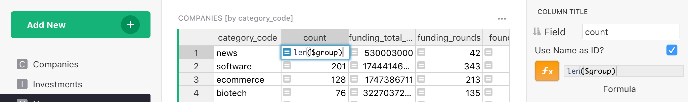
For numeric columns in the source table, summary tables automatically get a same-named numeric
column containing a sum, with a formula such as SUM($group.funding_total_usd).
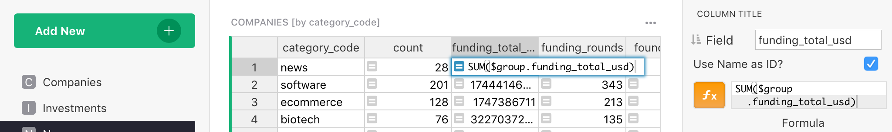
Side note for Python fans.
$group is a special Python object. It’s an iterable collection of records. Using an
attribute like $group.A is a shorthand for the list of values in the A column of all the
records in the group, i.e. it’s roughly equivalent to [r.A for r in $group].
Sometimes, adding the values doesn’t make sense. E.g. the sum of “founded_year” is meaningless. It’s best to delete that column, as well as anything else we don’t need. We’ll just leave the “funding_total_usd” column.
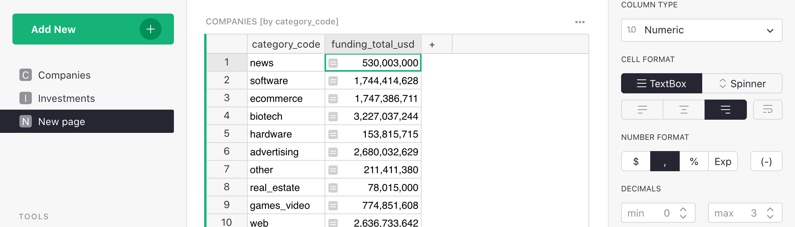
Let’s add a second summary table. Select “Add New” again to “Add Widget to Page”. To get a summary by year, select the “Investments” table under “Select Data”, and again use its sum symbol (∑) to select the column by which to summarize: “funded_year” and then click “Add to page”.
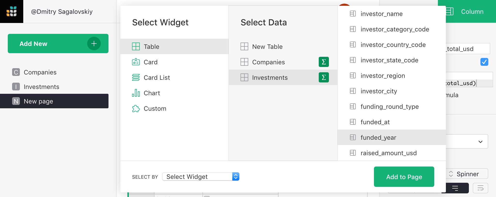
This produces a second summary table that shows a record for each year, with each representing a group of “Investments” rows for that year. The most useful column is “raised_amount_usd”, adding all investments made in that year. Let’s delete the unneeded columns.
You’ll notice pink values in “raised_amount_usd”. That’s because Grist guesses the column type to be an integer.The pink sums are instances where the numbers exceed Javascript’s ability to handle large integers. To correct for this, the type of the column should be switched to “Numeric” (which trades off precision for the ability to represent very large and very small numbers). Change the type to “Numeric“ under “Column options”.
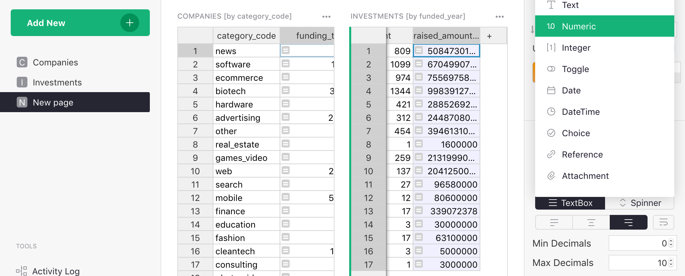
Chart, graph, plot#
You can make a chart of any data. To this page, we want to add a graphic version of each summary table. Select the “Add New” button again, pick “Add Widget to Page”, select “Chart” as the widget, and the same table (Companies) and summary column (category_code) as before.
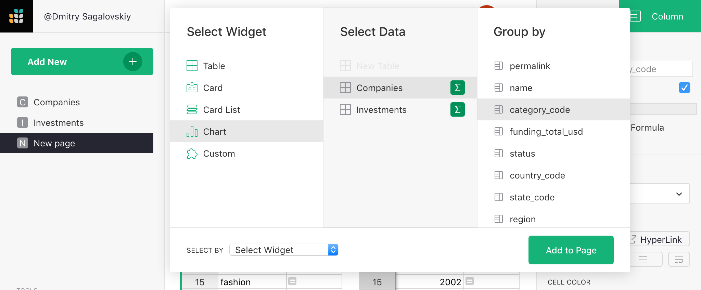
For a chart, you’ll always follow up by customizing it.
Open the right panel, and select “Chart” tab / “Widget” subtab. The “Visible Series” section in the subtab determines which columns of data will be used as the series in the chart. Their exact meaning depends on the chart type.
For this first chart, under “Chart type, select “Pie Chart”. To construct this chart, two Visible Series are required: the first one will be used as labels, and the second as values. Since we want the chart to show “category_code” as labels, and “funding_total_usd” as values, those should be the two items in the “Visible Series” list in the configuration panel. As you move your mouse over the items in that list, use the checkboxes or the “eye” icon that shows up to remove the other series from the list.
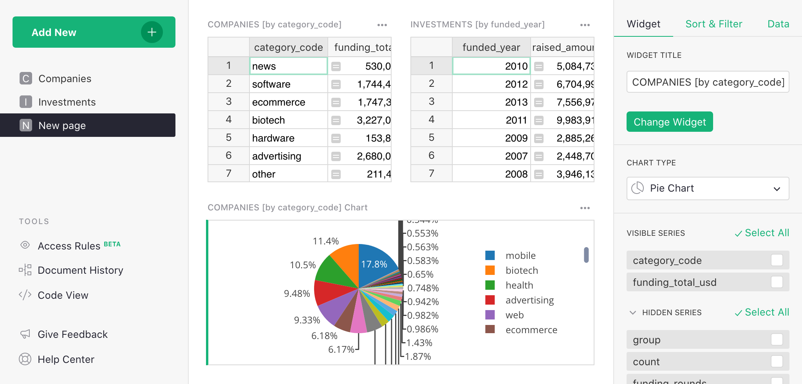
Now add a chart showing a trend by year. Add another “Widget to page”, select “Chart” under “Widget”, select “Investments” under “Select Data”, click summation (∑) to group by “funded_year”, and click “Add to page”.
To customize this chart, stick with the chart type “Bar Chart”. The list of “Visible Series” in the “Chart” tab should now be adjusted: the first series will be the values for the X (horizontal) axis, and second (and possible additional) series will be the values for the Y (vertical) axis. So hide the unwanted columns (“count”), and leave the “funded_year” first (to serve as the X-values), and “raised_amount_usd” second (to serve as the Y-values).
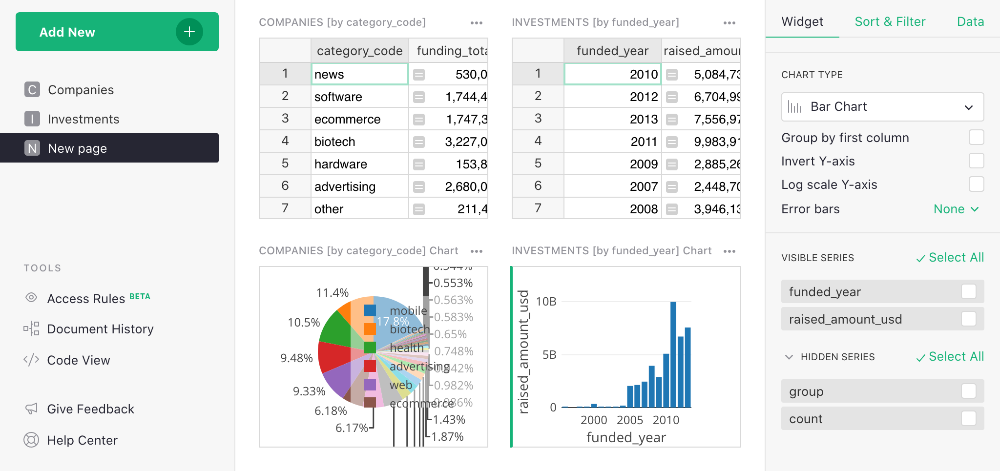
Drag and drop the sections into a configuration you’d like to see for a dashboard, and then rename the page “Overview”.

Dynamic charts#
If you’ve read our other tutorials on linking data, this will come naturally. Charts are simply a different way to show data, and they can be linked in the same way as tables.
For our example, we’ll add a new page with a summary table: widget “Table”, data “Investments”, group by “funded_year”.
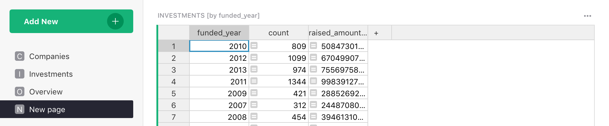
Let’s rename this new page “Breakdowns”.
Next, add a widget to this page, selecting widget “Chart”, data “Investments”. For “Group By”, we pick two columns: “funded_year” and “Company_category_code”.
Note: This is why we added the “Company_category_code” column earlier. We can only group investment records by the category code if we have this code for each investment.
The “Select By” dropdown at the bottom of the dialog box lists widgets already on the screen that can control the selection of data in the chart we are adding. In “Select By”, choose “INVESTMENTS [by funded_year]”, and click “Add to Page”.
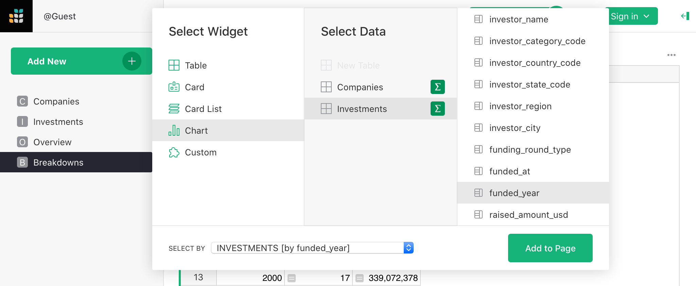
Note: If you need to make changes to a widget you already added, such as change its type, “Group By”, or “Select By” settings, you can always do so from the “Data” subtab in the widget settings, using the “Edit Data Selection” button.
We want to be able to select a year, and then show a pie chart for that year that displays the total for each category code. The “Select By” option we chose ensures that only the selected year’s data is used. All that’s left is to change the chart type to “Pie Chart”, and set “Visible Series” to only “category_code” and “raised_amount_usd”.

Note: Graphs need more screenspace, so our small screenshots will look better if we close the side-panes.
Let’s also sort the table by “funded_year”.
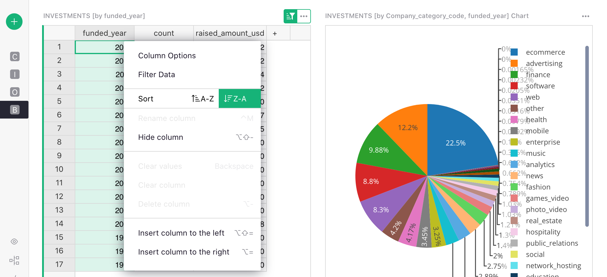
As far as sorting, the highlighted button above the table reminds you that sort settings aren’t saved automatically. Click the button and select “Save” to do that.
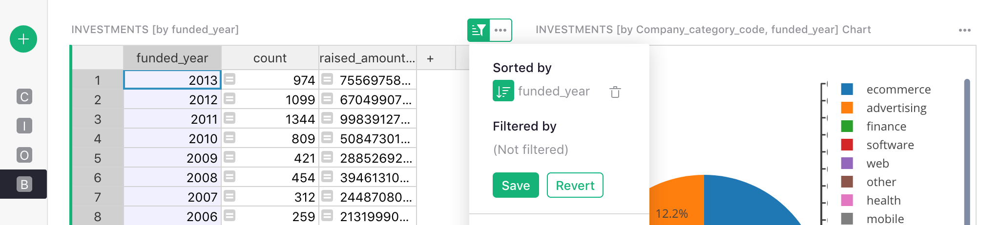
What’s the result? We can click through the years (or use arrow keys), and see the distribution by category change.
The last two steps are similar. Here, we’ll want to select a category in a table, and show a chart of historical investments in that category. Since all that data comes from the “Investments” table, we’ll show the categories as a “Table” widget by summarizing the “Investments” data.
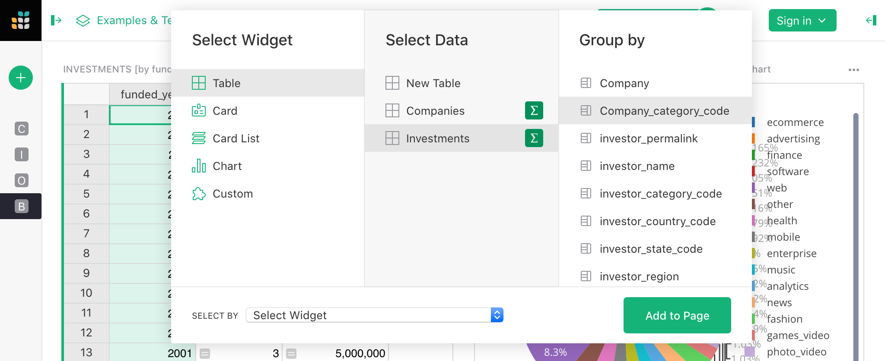
The “funded_year” column in the resulting table is meaningless, and should be deleted.
For the last step, we add another chart. We need to remember to group by both “funded_year” and “Company_category_code”, and to set a suitable “Select By” widget for it. Since there are two tables on this page, you have a choice of which one will drive the data in this chart. In this case, pick the widget that we just added: “INVESTMENTS [by Company_category_code]”.

As in the previous section, we configure the chart by selecting “Chart Type” as “Bar Chart”, and in the “Visible Series” list, leaving the series “funded_year” (the x-axis) and “raised_amount_usd” (the y-axis).

We can now click through the categories, and see the history of investment into each one.
Next steps#
If you’re unfamiliar with how we created the “Company Details” page that’s present in the example, visit one of these earlier tutorials to learn how: ‘How to build a Lightweight CRM’, or ‘Managing your Business in Grist’.
That’s it! Now go analyze some data!
-
The sample document includes only the “companies” and “investments” data, and includes only New York companies to keep it smaller and faster. ↩
-
Such duplication is commonly seen in spreadsheets. Data in this form is called “denormalized”. ↩
-
If you don’t have a single identifying column, you can construct one with a formula. ↩